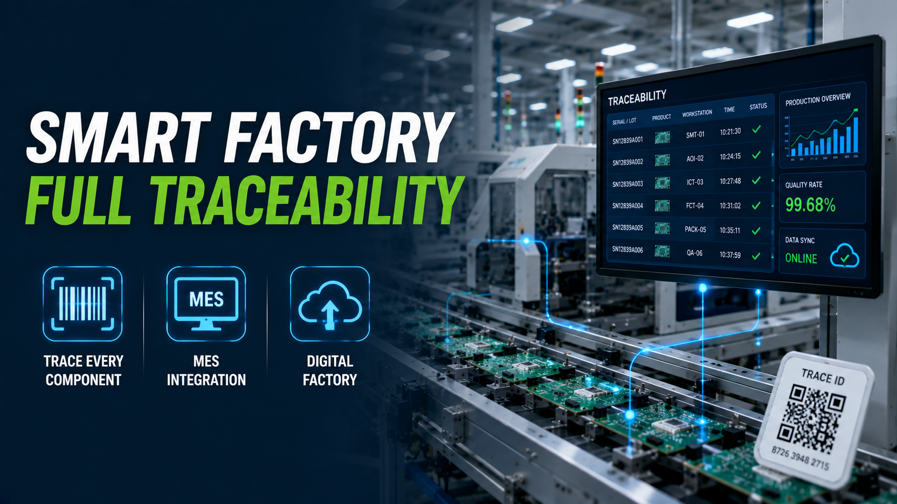

How Smart Factories Improve Traceability in Electronic Component Manufacturing

Summary
As electronic components become increasingly critical in electric vehicles, renewable energy systems, AI infrastructure, industrial automation, and medical equipment, manufacturers face growing demands for quality, compliance, and production transparency.
Today, customers expect more than high-quality products. They want complete visibility into how every component was produced, inspected, and tested.
Smart factories combine automation, Manufacturing Execution Systems (MES), industrial IoT, and digital production management to create complete traceability throughout the manufacturing process. This article explains why traceability has become a competitive advantage and how digital factories help manufacturers improve quality, efficiency, and customer confidence.
Technology
- Smart Factory
- Manufacturing Execution System (MES)
- Digital Manufacturing
- Production Traceability
- Industrial IoT
- Factory Automation
- Barcode & QR Code Tracking
- Vision Inspection
- Electrical Testing
- SPC Quality Monitoring
- ERP Integration
- Automated Production Line
Challenge
Manufacturers of electronic components face increasing pressure from customers, certification bodies, and regulators to provide complete production records.
In industries such as electric vehicles, energy storage, industrial power systems, telecommunications, aerospace, and medical devices, product failures can result in costly recalls, warranty claims, and damage to customer trust.
Many factories still rely on manual records or disconnected systems, making it difficult to answer critical questions such as:
Which batch of materials was used?
Which operator or machine produced the component?
What were the testing results?
Were all manufacturing parameters within specification?
Which products may be affected if a defect is discovered?
Without reliable traceability, manufacturers face greater operational risk and slower responses to quality issues.
Solution
Smart factories replace isolated production records with a fully connected digital manufacturing system.
Each production step automatically records manufacturing data, including material information, machine settings, production time, operator identification, inspection results, electrical test data, and equipment status.
Using MES software integrated with factory automation, barcode or QR code identification, industrial IoT sensors, and ERP systems, manufacturers create a complete digital history for every product manufactured.
This enables rapid quality analysis, faster root-cause investigations, and stronger compliance with international customer requirements.
Workflow & Layout
Raw Material Receiving
↓
Material Identification (Barcode / QR Code)
↓
MES Production Order
↓
Automatic Material Feeding
↓
Automated Manufacturing Process
↓
Machine Data Collection
↓
Vision Inspection
↓
Electrical Testing
↓
Quality Data Recording
↓
Packaging & Product Serialization
↓
Warehouse Management
↓
Customer Delivery
Every workstation continuously uploads production data to the MES platform, creating a complete digital production record that supports real-time monitoring and full lifecycle traceability.
Results & ROI
- Manufacturers implementing digital traceability systems typically achieve:
- Business Benefit Improvement
- Product Traceability Complete End-to-End Visibility
- Root Cause Analysis Faster
- Product Quality More Consistent
- Customer Compliance Improved
- Recall Management Faster & More Accurate
- Manual Documentation Significantly Reduced
- Production Transparency Higher
- Decision Making Data-Driven
- Customer Trust Strengthened
- Rather than viewing traceability as an additional cost
- leading manufacturers treat it as an investment that reduces quality risks and strengthens long-term customer relationships.
Equipment List
- A complete smart factory traceability solution may include:
- MES (Manufacturing Execution System)
- ERP Integration
- PLC-Controlled Automation Equipment
- Industrial IoT Sensors
- Barcode & QR Code Printing System
- Barcode / QR Code Readers
- Multi-Axis Winding Machines
- Automatic Assembly Equipment
- Electrical Testing System
- AOI Vision Inspection
- SPC Quality Monitoring Software
- Data Collection Server
- Conveyor Automation
- ASRS Warehouse System (Optional)
Project Overview / Opening
The definition of manufacturing excellence has changed.
Ten years ago, factories competed mainly on production capacity and labor efficiency. Today, customers increasingly evaluate manufacturers based on product quality, digital capabilities, and manufacturing transparency.
This shift is especially visible in industries such as electric vehicles, energy storage, industrial electronics, AI infrastructure, and medical equipment, where every component must meet strict quality standards and complete production records are often mandatory.
Smart factories enable manufacturers to move beyond traditional automation by combining intelligent equipment with digital production management, creating manufacturing systems where every product can be traced throughout its entire production lifecycle.
Key Points
- Global customers increasingly require complete production traceability.
- MES connects equipment, production orders, quality data, and operators into one digital platform.
- Real-time production monitoring improves decision-making.
- Barcode and QR code systems enable full product genealogy.
- Automated inspection ensures quality data is recorded automatically.
- Digital records simplify compliance with international standards.
- Data-driven manufacturing supports continuous improvement.
- Smart factories strengthen long-term competitiveness and customer confidence.
Implementation / Workflow
A successful traceability project begins by defining which production data is most valuable for quality management and customer compliance.
Manufacturers then integrate automation equipment, barcode identification, inspection systems, testing equipment, and MES software into one unified production management platform.
Throughout production, each workstation automatically uploads process parameters, inspection results, equipment status, and operator information to the central database.
Managers can monitor production in real time, investigate quality issues quickly, generate complete production reports, and provide customers with reliable manufacturing records whenever required.
As factories continue expanding, the same digital platform also supports production scheduling, maintenance planning, equipment performance analysis, and continuous process optimization.
Customer Value / Results
Smart factory traceability delivers measurable value for manufacturers and their customers:
Complete production history for every component
Faster response to quality incidents and customer claims
Improved compliance with automotive, industrial, and medical quality standards
Greater confidence during customer audits
Reduced warranty and recall risks
Better production planning through real-time operational data
Increased manufacturing efficiency through digital management
Stronger competitiveness when supplying multinational OEMs
Foundation for future AI-driven manufacturing and predictive analytics
For manufacturers serving Europe, North America, and other quality-driven markets, robust traceability is increasingly a prerequisite for winning long-term business.
Conclusion / Next Step
As electronic products become more complex and global quality standards continue to evolve, traceability is no longer just a compliance requirement. It has become a strategic capability that improves product quality, strengthens customer trust, and supports sustainable manufacturing growth. Smart factories combine automation, MES, and digital manufacturing to transform production data into a valuable business asset, helping manufacturers compete in the era of Industry 4.0.
We help manufacturers worldwide design, source, integrate, and deliver industrial automation projects by leveraging China's manufacturing ecosystem. From automated production lines and MES implementation to digital factory planning, traceability systems, and smart warehouse integration, we provide complete end-to-end solutions tailored to your manufacturing goals and industry requirements.
Whether you're upgrading an existing electronics factory or planning a new smart manufacturing facility, visit our Contact page to share your project requirements or inquiry. Our team can help you build a customized digital production solution that enhances traceability, improves operational efficiency, and prepares your factory for the future of intelligent manufacturing.
SEO Title
How Smart Factories Improve Traceability in Electronic Component Manufacturing
SEO Description
As electronic components become increasingly critical in electric vehicles, renewable energy systems, AI infrastructure, industrial automation, and medical equipment, manufacturers face growing demands for quality, compliance, and production transparency.
Today, customers expect more than high-quality products. They want complete visibility into how every component was produced, inspected, and tested.
Smart factories combine automation, Manufacturing Execution Systems (MES), industrial IoT, and digital production management to create complete traceability throughout the manufacturing process. This article explains why traceability has become a competitive advantage and how digital factories help manufacturers improve quality, efficiency, and customer confidence.
Related Blog
Start with Your Business Challenge
Tell us about your warehouse, factory, or production requirements. We'll help you explore practical automation solutions and relevant project references.